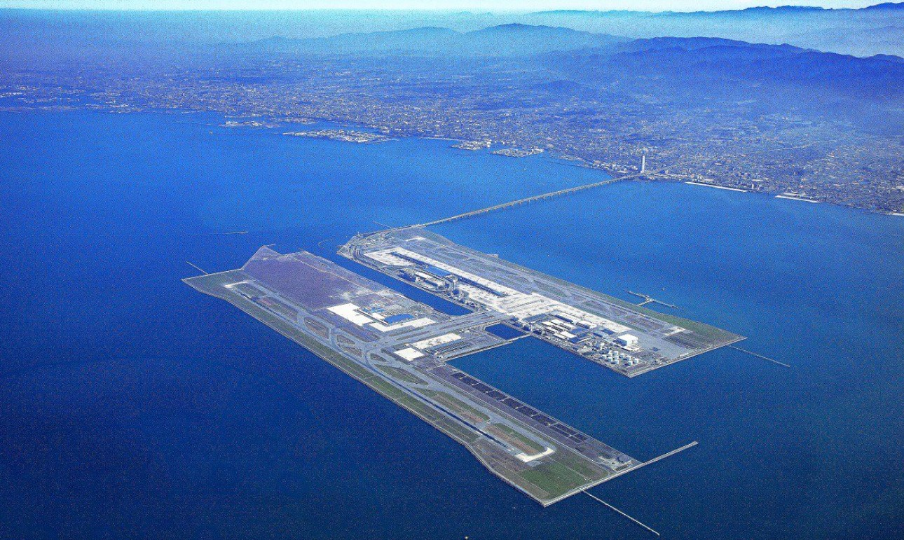
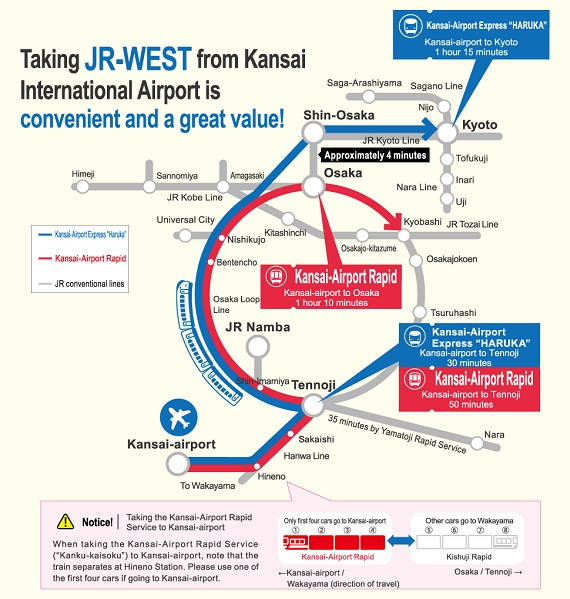
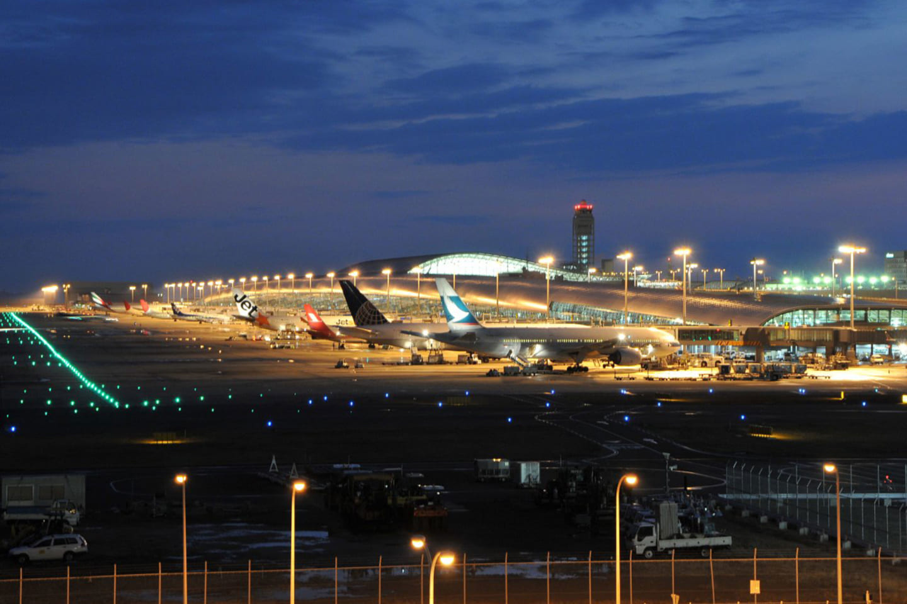
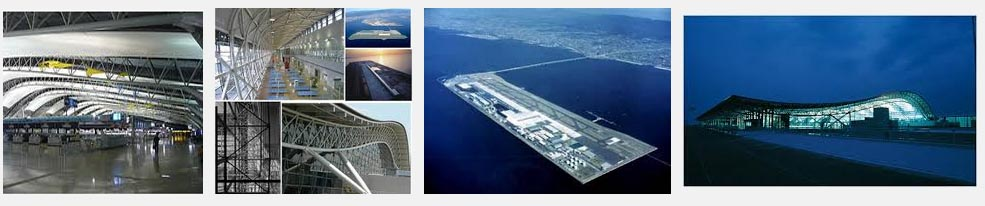
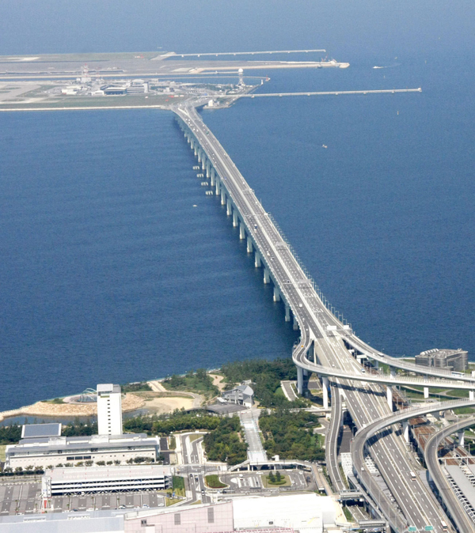

Aeropuerto Internacional de Osaka Kansai. Es el segundo aeropuerto con más tránsito de Japón y es famoso por estar construido sobre el mar, en una isla artificial creada para tal efecto de 4kms de largo y uno de ancho. Fue inaugurado
en 1994 y sus únicos accesos son una autopista y un puente ferroviario utilizado por dos líneas : JR y Nankai..

GUÍA del PASAJERO
El Aeropuerto Internacional de Kansai fue el primer aeropuerto flotante del mundo y actualmente transporta cerca de 300.000 pasajeros por semana.
Historia Aeropuerto Kansai de Tokio
El Aeropuerto Internacional de Kansai se encuentra construido sobre el mar, en la Bahía de Osaka, en Japón, y es el segundo más transitado de todo el país. El rasgo más característico de este aeropuerto japonés es que se encuentra
construido sobre una isla artificial.La longitud del edificio de la terminal es de 1,7 kilómetros, siendo la terminal de un aeropuerto más larga del mundo, y tiene 4 plantas. El techo de ésta fue diseñado con la forma del perfil
del ala de un avión.La isla artificial sobre la que está construido el aeropuerto tiene 4 kilómetros de largo y 1 de ancho. La construcción de ésta comenzó en el año 1987 y finalizó en 1989, teniéndose en cuenta los posibles terremotos
y tifones de la zona, y dotó de empleo a unas 10.000 personas. Para la construcción de esta isla fueron necesarios unos 21 millones de metros cúbicos de bloques de hormigón y presentó algunas dificultades, como el hundimiento de
la isla 8 metros antes de finalizarse el proyecto. Para acceder al aeropuerto existen dos opciones: un puente ferroviario o una autopistaEste aeropuerto fue reconocido como uno de los "diez Monumentos de la ingeniería civil del
milenio" por la Sociedad Estadounidense de Ingenieros Civiles. El diseño de la terminal de este aeropuerto corresponde al arquitecto italiano Renzo Piano y su inauguración fue en el año 1994.
.
Localización
El Aeroupuerto Internacional Kansai se localiza en 1-banchi, Senshu-kuko Kita, Izumisano-shi, Osaka 549-8501, Japón
Mapa Aeropuerto Internacional de Kansai
<
¿Cómo llegar?
El Aeropuerto Internacional de Kansai fue el primer aeropuerto flotante del mundo y actualmente transporta cerca de 300.000 pasajeros por semana.

Terminales
Terminal
La terminal es un edificio de cuatro pisos diseñado por Renzo Piano. Es la terminal más larga del mundo, con una longitud de 1,7 km de punta a punta. Un sofisticado sistema de transporte peatonal traslada a los pasajeros de
un extremo al otro. El techo de la terminal fue diseñado con la forma del perfil de un ala de avión, forma que es aprovechada por su sistema de ventilación. El aire es impulsado desde un lado de la terminal, y la curvatura
del techo conduce el aire al otro lado, en el sentido transversal, en el que es recogido. Actualmente cuenta con una segunda terminal reservada para las aerolíneas de bajo coste, en especial para Peach que tiene el aeropuerto
de Kansai como el principal en sus operaciones.
Organizada en:
Terminal 1, organizada en 4 plantas
Planta baja: Aduanas y equipajes
planta 2: Embarque
Planta 3: Facturación

Transporte
Autobús:
Los servicios de autobuses limusina operan con frecuencia entre el aeropuerto de Kansai y un gran número de paradas en Osaka, incluida la estación de Osaka, la estación de Namba, la estación de Shin-Osaka y Universal Studios. También
circulan autobuses nocturnos que salen una vez por hora desde la estación de autobuses entre medianoche y las 5 de la mañana.El viaje dura una hora y el precio es de 1.550 yenes. Los pasajeros pueden comprar los billetes en
las máquinas expendedoras del aeropuerto
Taxi:
Coger un taxi desde el aeropuerto de Kansai es fácil, pero como el viaje dura 50 minutos, es muy caro. La tarifa del taxi cuesta alrededor de 15.000 yenes durante el día y 17.500 por la noche. Por este motivo, no es la mejor manera
de trasladarse del aeropuerto de Kansai a Osaka.
Tren:
Osaka es una gran ciudad con múltiples estaciones de tren. Dependiendo de a dónde quieras ir, puedes subirte a un tren en el aeropuerto de Kansai y llegar a la estación de Osaka, a la estación de Namba, a la de Tennoji o a la estación
de Shin-Osaka. Estas son las líneas que puedes utilizar para llegar a Osaka:
The Haruka Express
El Haruka Express sale del aeropuerto de Kansai cada 30 minutos y para en las estaciones de Tennoji y Shin-Osaka, además de llevarte hasta Kioto, si lo deseas. Es la forma más rápida de realizar este trayecto. Los viajeros
pueden usar su JR Pass para viajar en el Haruka Express. Si prefieren no hacerlo, los billetes cuestan 2.000 yenes para Tennoji o 3.000 yenes para Shin-Osaka. Están disponibles tanto asientos reservados como no reservados.
Kansai-Airport Rapid
El tren Kansai Airport Rapid es una alternativa más económica al Haruka Express, haciendo las mismas paradas hasta Kioto. Los billetes a la estación Tennoji cuestan 1.000 yenes y 1.200 yenes a la estación de Osaka, donde ya
podrás usar tu JR Pass. Ten en cuenta, eso sí, que el Kansai Airport Rapid tarda 15 minutos más que el Haruka Express, ya que hace más paradas.
Nankai Rapi:t
Los trenes Nankai conectan el aeropuerto de Kansai con Namba. Hay dos tipos de trenes Nankai: los trenes ‘Rapi: t Alpha’ y ‘Rapi: t Beta’. La única diferencia entre ellos es que los trenes Beta hacen dos paradas más y, por
lo tanto, son un poco más lentos. Los trenes salen cada 30 minutos y el precio del tren es de 1.340 yenes (los trenes Nankai no están cubiertos por el JR Pass).
Conoce el Aeropuerto Kansai
El aeropuerto construido sobre una isla artificial, el Aeropuerto Internacional de Kansai

Caracteristicas de la Isla
Creada por la mano del hombre tiene 4 km de largo por 1 de ancho, los ingenieros la diseñaron considerando los posibles terremotos y tifones frecuentes en la región. La construcción se inició en 1987, siendo terminada la muralla protectora
a finales de 1989. Aproximadamente 21 millones de metros cúbicos de bloques de hormigón fueron utilizados de relleno, excavados de tres montañas. La obra empleó una mano de obra de aproximadamente 10.000 trabajadores, y 10 millones
de horas de trabajo a lo largo de 3 años, el uso de 80barcos para completar la capa de 30 m de grosor ubicada en la plataforma submarina. En 1990, se completó el puente de 3 km de largo, que conecta la isla artificial con la Prefectura
de Osaka, con un coste de 1.000 millones de dólares. Para ese momento, la isla se había hundido 8 m, más de lo previsto, y el proyecto se transformó en el trabajo de ingeniería civil más caro de la historia moderna, luego de 20
años de planificación, 3 años de construcción, y miles de millones de dólares invertidos. En 1991 secomenzó con la construcción de la terminal y para compensar el hundimiento de la isla, se diseñaron columnas ajustables para soportarla,
siendo inaugurado el aeropuerto en 1994. En 1995 el aeropuerto internacional de Kansai sufrió el Terremoto de Kobe, cuyo epicentro estuvo a tan sólo 20 km y cobró la vida de 6.433 personas. Sin embargo, el aeropuerto soportó el
terremoto sin inconvenientes, principalmente por el uso de empalmes deslizantes en su construcción. Incluso los vidrios del aeropuerto no recibieron daños. En 1998, el aeropuerto no tuvo problemas con un tifón con vientos de hasta
200 km/h. En el 2001, el aeropuerto fue premiado como uno de los diez "Monumentos de la ingeniería civil del milenio" por la Sociedad Estadounidense de Ingenieros Civiles

¿Qué encontrarás en el Aeropuerto de Kansai?
Servicios aeroportuarios
Centro de información turística
Visita el centro de información turística para hablar con agentes de viaje multilingües y conseguir mapas y folletos gratuitos. Una visita al centro puede ahorrarte mucho tiempo en la planificación de tu viaje.
Los medios de transporte público, las tiendas y los restaurantes japoneses tienen prohibido aceptar moneda extranjera, por lo que necesitarás yenes en billetes pequeños para tus cubrir algunos gastos comunes. En el caso de
las monedas extranjeras distintas del dólar estadounidense, es aconsejable cambiar el dinero a yenes en el aeropuerto. Los cheques de viaje se pueden cobrar rápidamente en los bancos, aunque pocas tiendas o restaurantes
los aceptan. Si te sobran yenes al final del viaje, puedes volver a cambiarlos en el aeropuerto (solo los billetes, no las monedas), siempre que el centro de cambio disponga de fondos suficientes en la moneda extranjera.
En la terminal hay nueve bancos para cambiar divisas, uno o varios de los cuales están abiertos de 6:00 a 23:00.
Canje de pedido de Japan Rail Pass
Puedes conseguir tu Japan Rain Pass (en inglés) al canjear tu pedido en la ventanilla verde (Midori-no-Madoguchi). Taquilla de reservas en la estación JR del aeropuerto de Kansai. Puedes validar tu abono dentro de un plazo
de tres meses a partir de la fecha de emisión del pedido de canje. El abono es válido en la mayoría de trenes de la red JR.
El Aeropuerto de Osaka ofrece una amplia variedad de tiendas, restaurantes y snack bares. Las posibilidades de ordenar bebidas alcohólicas son, sin embargo, limitadas. En la Aeroplaza, hay un café al estilo japonés, y las únicas alternativas
son los bares en el Hotel Nikko Kansa. Hay gran cantidad de tiendas libres de impuestos (duty-free).
Hoteles
Hay un hotel en el aeropuerto: Nikko Kansai Airport (tel: +81(0)724 551 111). Este hotel está conectado directamente con el edificio de la terminal. Inmediatamente al otro lado del puente de peaje, la ciudad Rinku, están el ANA Gate Tower Hotel Osaka
(tel: +81(0)724 601 111) y el Ramada Kansai Airport Hotel (tel: +81(0)724 691 112. En el hall de Llegadas, hay una mesa para reservas de hoteles. Para más hoteles y reservas por internet, visitar Booking.com. Ellos ofrecen una
amplia gama de hoteles a tarifas muy razonables por internet.
Equipaje
Los casilleros de seguridad para equipaje están situados en el segundo piso del edificio de la terminal, tanto en el lado norte y sur. Se pueden solicitar maleteros a través del: +81(0)724 553 450. Para información sobre objetos perdidos, llamar al: +81(0)724
552 500.
Información
Hay en total seis mesas de información general en el Aeropuerto Internacional de Osaka Kansai. Están esparcidas alrededor del edificio de la terminal. La principal mesa está situada al lado norte del primer piso (llamar al: +81(0)724 552 500). El Centro
de Información Turística de Kansai (llamar al: +81(0)724 566 025) se lo puede encontrar en la plana baja.
Negocios
En el tercer piso, hay un centro de negocios con una sala de reuniones/conferencias (abierto de 08.00-20.00, tel: +81(0)72 456 7151), con instalaciones de teléfono y fax y computadoras con internet. Además, este centro ofrece apoyo de secretaría y servicio
de catering. Instalaciones de negocios más amplias, incluyendo un hall de conferencias para hasta 500 personas, son ofrecidas por el Hotel Nikko Kansai Airport
Personas con discapacidad
El Aeropuerto de Osaka es muy accesible para personas con discapacidad. Existen rutas marcadas desde los lugares de estacionamiento a la terminal y a las mesas de información. La mayoría de los ascensores y baños han sido modificados para acomodarse a
los usuarios de sillas de ruedas y discapacitados visuales. Además, hay zonas de estacionamiento para discapacitados. Las personas con deterioro auditivo pueden enviar faxes en las mesas de información, que también pueden ser contactadas
por las personas que desean alquilar una silla de ruedas.
Otros Servicios
A lo largo de la terminal, hay oficinas de cambio, cajeros automáticos y bancos. Hay también una oficina postal. El internet inalámbrico está disponible. Además, hay varios puestos de internet, que son gratuitos detrás del punto de control aduanero. El
Kinki University Hospital tiene una clínica médica en el aeropuerto (tel: +81(0)72 456 7185). Existen también una clínica dental (tel: +81(0)72 456 8601, abierta en días laborables de 09.30-13.00 y 14.00-19.30). El Te Sky View
– separado del edificio de la terminal, al que se puede llegar con un autobús de enlace – ofrece una vista maravillosa de la llegada y salida de aviones. Adyacente a la plataforma de observación hay una sala de entretenimiento,
así como tiendas y restaurantes. En el Hall de Salidas de la terminal internacional, hay un zona de juegos para niños.